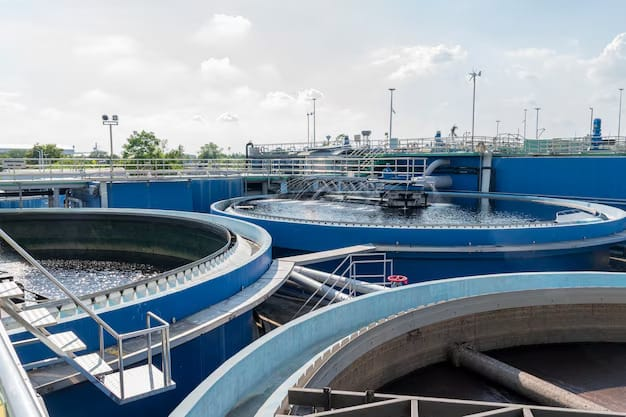

Energía
Protección de infraestructuras críticas en generación, transmisión y distribución.

INDUSTRIAS
Entendemos los desafíos de cada industria y sus entornos operacionales. Aplicamos nuestra experiencia en ciberseguridad OT, ingeniería y tecnología para entregar soluciones adaptadas a sus necesidades y niveles de riesgo.
Protección de infraestructuras críticas en generación, transmisión y distribución.
Seguridad y continuidad operacional en procesos mineros críticos.
Protección de procesos industriales, plantas e infraestructura crítica.
Seguridad de procesos productivos y entornos industriales conectados.

Resiliencia en sistemas de agua, tratamiento y servicios esenciales.

Protección de sistemas de transporte, movilidad e infraestructura crítica.
NUESTRO ENFOQUE
Aplicamos experiencia, tecnología y conocimiento normativo para proteger lo que mantiene en movimiento al mundo.